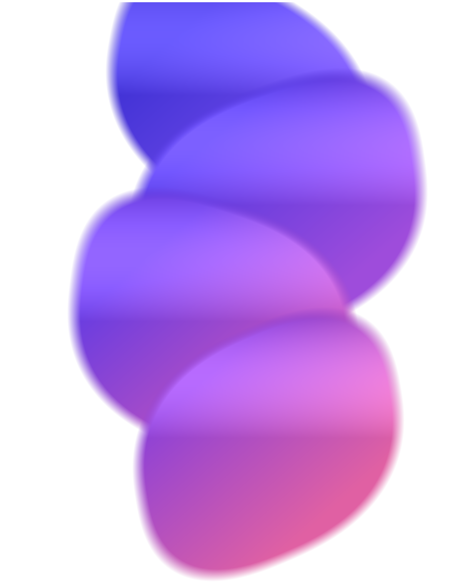

From a written brief to a part you can make.
Sanjay Giridharan Founder · Arizona State University
An engineer already knows what the part has to do. That decision takes hours. Turning it into geometry a machine shop will accept takes days.
Small hardware teams lose those days over and over, on brackets, housings, fixtures and mounts. That work is not engineering judgment. It is translation, and nobody gets funded for it.
JAI turns a written part brief into an editable CAD program, runs it in a geometry engine, and builds a real solid. That solid then passes a production-readiness gate:
When a check fails, the failure goes back in and JAI repairs the program. The engineer receives the part, the program that built it, and the report that cleared it.
JAI has already designed hardware that is built and in the published record: a microplastics separation filter, the SwiftFin robotic tuna, an amphibious ornithopter, an ocean crawler, and a seal-whisker flow sensor published in Bioinspiration & Biomimetics.
The 40 of 40 figure describes the five parts in the current evidence set, and covers geometry and process rules rather than whether a part matches its brief. The 73 of 80 figure is a saved internal comparison measuring geometric validity. JAI has no paying customers yet.